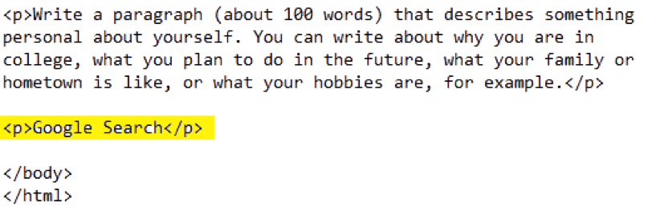
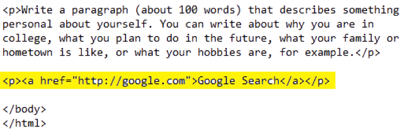

Introduction to HTML
Part 2: Adding additional text and a hyperlink to the HTML file
In this part of the assignment, you will be asked to add a new line of text as a separate paragraph, and to create a hyperlink to an existing Website. Hyperlinks are one of the keystones of the Web, since they create the ability to move easily from one page to the next, not only within a single Website, but also across Websites.
If you took a break after Part 1, make sure that your HTML file is open in both Notepad and your browser.
- In the Notepad file, on one of the blank lines under the paragraph and above the </body> tag, key the phrase Google Search as a new paragraph, with a new paragraph tag in front, and the closing tag at the end:

- Save the Notepad file and refresh the browser window to make sure that the text was added correctly to the page. It should appear as a new, separate line of text at the bottom of the page.
- Return to the Notepad file, and use the anchor (a) tag to create a hyperlink to Google’s URL (http://google.com) to the new phrase, as shown below:

- Save the file in Notepad, and refresh the page in your browser. The last phrase should appear as a hyperlink if you set it up correctly, and if you click on it, the Google homepage should open in the same window. (Remember that you can use the BACK arrow to return to your Webpage.) If the text does not look correct, or if the link does not work, return to the Notepad file and check that you entered the text correctly for the hyperlink.
Once the hyperlink works, you are ready to move on to the next part of the assignment.